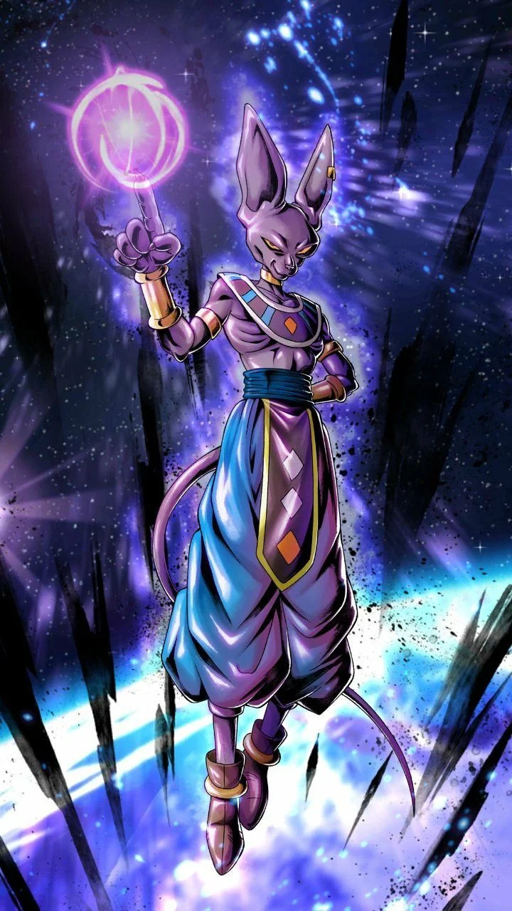

Top 5 powerful anime character of all time :
We think this list is pretty accurate, but is in no sense definitive. Whereas some characters may be clear standouts, there is always subjectivity when it comes to assessing powers. Personal preferences do have an impact when it comes to determining who would beat who. We’d also like to state that although there may be some more powerful characters in anime, this list is based off of what we’ve seen. Yes, the Grand Priest from Dragon Ball Super is incredibly powerful, but until he throws down, we have to leave him off the list. That being said, we present to you, for the first time ever, the 5 most powerful anime characters ever ranked from the least to the most powerful.
1. Zeno ~Dragon Ball Super

Yep, this short, colourful, football shaped head guy is the most powerful character in anime. Also
referred to as the Omni-King, he is one of the kings of the 12 universes, alongside his future
counterpart, Future Zeno. Zeno is the king of all and the god of gods. He has a child-like and
innocent demeanor, which masks just how powerful he really is. According to Whis, there were
originally 18 universes, but when Zeno was in a particularly grumpy mood he destroyed six of them.
Needless to say, his name strikes fears into the hearts of even the Gods of Destruction.
He is one of the few characters on this list who doesn’t actually fight.
He doesn’t seem to have particularly good fighting instincts either, as he was unable to track Dypso’s movements during the Tournament of Power. However, when you’re one of only two characters known to use the ‘erase’ ability, you don’t need to know how to throw a punch. Nobody in the world in greater than Zeno. He has the power to instantly destroy anything he wants. From individual people, to planets, galaxies or even entire universes in the blink of an eye. If he wanted to, he could simply erase everything that exists. Thankfully for us Dragon Ball fans, he doesn’t.
You don't get the title "One Above All" by being second best. As the Ruler of Existence, Zenō sits
above every other being in existence across the 12 Universes and throughout all of time. He is only
second to himself, thanks to his future incarnation being brought back to the present by Goku, but
the two are equal in power.
There is no shortage of powerful characters in the Dragon Ball Omniverse, but even the Gods of Destruction, Supreme Kais, Kais, and all the inhabitants of the 12 Universes pale in comparison to Grand Zenō, the Omni-King.
Throughout his 8+ million years sitting on the throne as King of all reality, Zenō has played a major role in shaping the Omniverse.
2. Whis ~Dragon Ball Super
Despite his garb, which makes it look like he just took a wrong turn off the catwalk, Whis is an
incredibly powerful angel. He is the attendant and martial arts teacher for Beerus. We don’t
commonly think of angels as being more powerful than gods, but in this case they are. Whis is the
strongest being of Universe 7, and Beerus himself has stated that Whis is far stronger than him.
Whereas Super Saiyan God Goku could barely handle Beerus at half of his full strength, Whis knocked
out a rampaging Beerus with a single chop to the neck.
He effortlessly fends off Goku and Vegeta simultaneously, casually dodging all of their best attacks
with his hands behind his back. A single finger has enough power to stop the planet shattering
punches of the two Saiyan warriors. His power is matched only by his speed. He explains to Goku and
Vegeta that each of his limbs acts as its own organism. This eliminates the need for thoughts to
travel to the brain, granting him much faster reaction time. Along with punches powerful enough to
defeat gods, his staff can make objects vanish and reappear, materialize new objects from nothing
and he can transport people to his own, inescapable pocket dimension. He may be an angel, but this
is not someone to be messed around with.
One might think that with a title like "God of Destruction," Beerus would be the strongest being in
his universe. However, this would be an incorrect assumption, as Whis is superior to Beerus in terms
of power and knowledge. Whis' power is far greater than that of the God of Destruction, which is why
Goku and Vegeta were so eager to learn from him.
Whis is easily the strongest being in Universe 7.
His fighting power outclasses all other warriors and his magical powers give him a huge advantage over all that would challenge him. Whis also claims to be the fastest in the universe, which is true in both his reflexes and fighting speed as well as his travel speed.
3. Beerus ~Dragon Ball Super
Beerus is not a cat you want to cuddle. He is the God of Destruction of Universe 7. He’s initially an
antagonist in the series, but later on becomes a supporting member of the cast. Like most cats, he
is perpetually lazy, but don’t let this distract you. He is incredibly powerful, being regarded as
one of the strongest among the 12 Gods of Destruction. His job is simple: maintain balance in the
universe.
He does this by sleeping for several years to decades at a time and when he wakes up, he destroys a couple planets to make room for new ones to grow.
Like a cat with a mouse, Beerus toys with even the Saiyans. During his first fight with Super Saiyan God Goku, the fists of the two connected, causing ripples throughout the entire universe. This occurred even though Beerus was still holding back a considerable amount of his strength. His ultimate technique is called Hakai, which literally means destruction. It is an energy available to all Gods of Destruction that can completely obliterate and object or entity in the universe (save for high-tier gods). He kindly doesn’t use this in his fights against the Saiyans, but if he did, the Dragon Ball Super series would have been much shorter.
In Universe 7, Beerus is the God of Destruction, who always has his martial arts teacher and attendant, Whis, along his side. As the God of Destruction, Beerus possesses insurmountable destructive powers -- he can destroy a planet just by sneezing.
4. Goku ~Dragon Ball Super
The hero of hero among anime characters, Goku is legendary in terms of his power. From the beginning
of the Dragon Ball anime series, it has been made clear that most characters have the strength to
destroy entire planets. So, after the conclusion of Dragon Ball Super, Goku’s strength is almost
unfathomable. Time and time again he’s foiled the evil plans of alien overlords, vengeful androids
and destructive djinns. His Ka-me-ha-me-ha is arguably the most iconic signature move in anime and
has been the downfall of many foes.
After the Tournament of Power, Goku has shown to have power levels rivaling that of the gods.
This is proven when he masters ultra instinct and overwhelms Jiren, who is stated to have power that even gods would struggle to defeat. So why is he below Jiren? Well, he doesn’t have control over activating ultra instinct. It’s triggered when he’s backed into a corner. Although the tournament of power spanned many episodes, it was in reality, only a 48-minute contest. Of those 48, Goku only manages to keep his mastered ultra instinct form activated for one minute before it severely backlashes on his body. So, if he runs into an enemy he can’t defeat in one minute with mastered ultra instinct, he’ll be in trouble.
Goku finally masters Ultra Instinct once doing so his power surpasses the seemingly unstoppable Jiren. When Jiren uses his full power he is able to fight on par with MUI Goku, but Jiren angers Goku by shooting an energy blast at U7 on the side lines, which angers Goku causing him to bring Jiren to his knees with his incredible power and goku is able to stand up after a full power blast by jiren.
5. Saitama ~One Punch Man

Saitama is the main protagonist of the One-Punch Man series. In a world filled to the brim with
superheroes and superpowers, Saitama rises far above the rest. He is so powerful in fact, that he
faces the daily existential crisis of being too strong to enjoy being a hero. When every battle ends
with one punch, fighting becomes a bit monotonous. How did he gain such a ferocious power? According
to him, it was a strict training regiment of 100 daily push-ups, sit-ups, squats and a 10-kilometer
run. However, most characters in the show don’t believe him, and the origins of his power are a
source of mystery.
So how strong is he? Well, in the entirety of the anime so far, we’ve seen Saitama throw one serious
punch. Against enemies that crushed the like of Genos, a simple swing of Saitama’s arm liquidizes
their abdomen. His one serious attack was in the epic battle against Lord Boros. Saitama’s serious
punch negates an attack from Boros that has enough power to destroy a planet. The shockwave of the
punch alone ripped Boros to shreds and parted the clouds around the entire earth. Boros then
mentioned that this wasn’t even close to his full power. Until we see Saitama at his fullest, we
can’t in good conscience put him higher on the list.
Before Saitama ever becomes an official hero, he saves a character coined "Ball-Chinned Kid" from
Crabman, a monster that attacks the boy in a park. The act of kindness seems pretty insignificant at
the time — just another moment in the life of a hero-for-fun. But it has a larger impact on
Saitama's world than even he realizes.
As it turns out, the kid Saitama rescued is the grandson of Agoni, the multi-millionaire who founded
the Hero Association. Agoni came up with the concept of the organization after hearing what
transpired between Saitama and his grandson, meaning that Saitama was the foundation that the entire
association was built on. He has no idea, of course, and neither do they. To them, he's just another
B-Class hero.